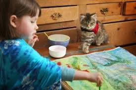

La storia di un concorso, di gatti e di magia
Ogni anno nel Regno Unito viene organizzato un evento felino molto particolare. L’associazione benefica Cats Protection celebra i gatti legati a storie di devozione, coraggio e compagnia. Gli amanti dei gatti di tutto il Regno Unito sono stati invitati a nominare i loro amici a quattro zampe per il più grande evento felino dell’anno.
I gatti possono essere nominati in cinque categorie tra cui:
L’organizzatore Kate Bunting: “I gatti hanno una visione unica della vita, sono in grado di portare un senso di calma e conforto e allo stesso tempo possono essere infinitamente divertenti. La loro devozione e l’allegria che trasmettono li fanno amare in milioni di case”
La Pet Therapy (intervento assistito con gli animali) termine coniato nel 1964 dallo psichiatra Boris M. Levinson, ormai è riconosciuta come cura ufficiale da molti anni (Decreto del Presidente del consiglio dei ministri del 28/02/2003), e da alcuni anni si sono moltiplicati i programmi di supporto per persone con autismo.
L’uso terapeutico degli animali da compagnia produce effetti benefici che si riscontrano sia sotto il profilo psico-emozionale che fisico nelle persone alle quali viene praticata. Tantissime le testimonianze che raccontano come i gatti sono riusciti ad aiutare bambini e adulti con la Sindrome di Asperger ad aprirsi al mondo.
Un esempio è la storia di Kylie con il suo gatto Arthur che ha contribuito a trasformarle la vita e farle superare le proprie paure. Loro due sono diventati inseparabili, la presenza di Arthur l’aiuta ad affrontare l’ansia , aumentando la sua capacità di affrontare il mondo esterno e migliorare le sue abilità sociali affiancandola in ogni momento della giornata in casa e fuori.

Oppure Iris Grace , bambina di 8 anni nello Spettro Autistico, fino a qualche anno fa si isolava completamente dal mondo, c’era solo lei e la pittura. Il contatto con altri bambini la rendevano nervosa fino a procurargli vere e proprie crisi di panico. Poi è arrivata Thula, una splendida gatta Maine Coon che è riuscita a creare un legame emotivo con Iris che adesso si mostra più spigliata e allegra e riesce meglio a comunicare con le altre persone. Poi è esplosa la magia, Iris quando dipinge vicino alla sua gatta riesce a creare dei dipinti straordinari che l’hanno fatta conoscere in tutto il mondo. Un talento geniale e straordinario che grazie al suo gatto è riuscita a comunicare tramite i suoi dipinti.
La bellezza e la sensibilità che sprigionano i quadri della piccola Iris Grace hanno colpito il mondo intero tanto da diventare una pittrice riconosciuta i cui quadri sono stati venduti a livello internazionale. La sua storia e la poesia di questi dipinti raccontano la delicatezza dell’animo della piccola Grace a cui la gatta Thula ha aperto la porta.